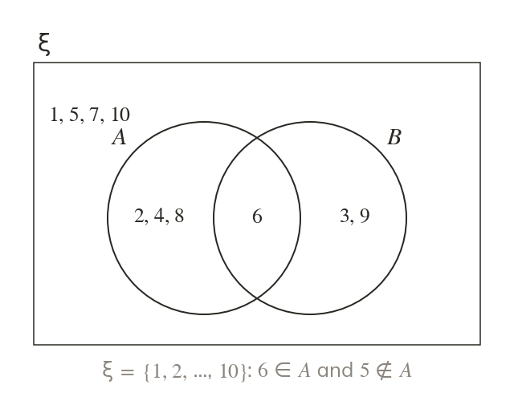
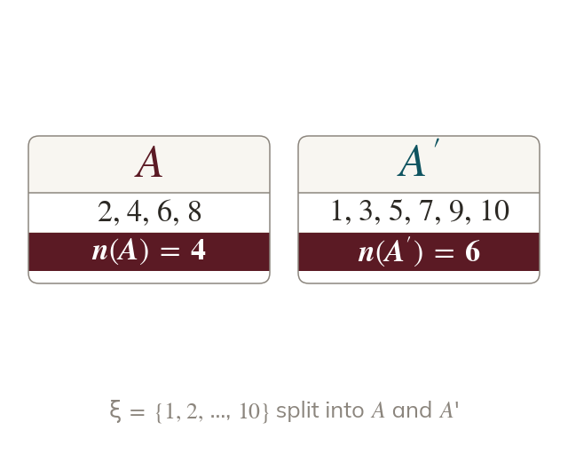
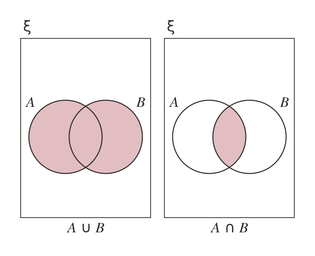
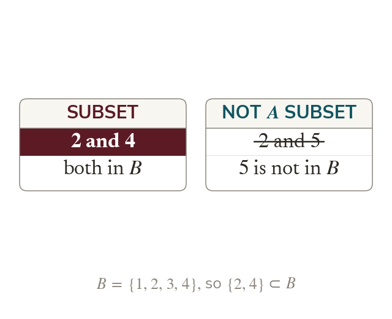
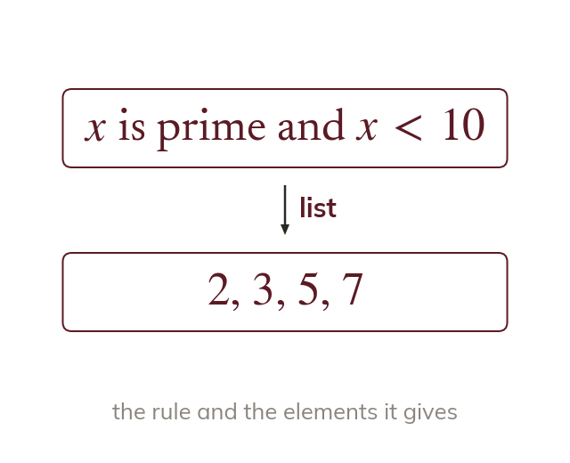

Belonging
A set is a list of distinct elements in curly brackets. The symbol ∈ means 'is an element of'.
Sets are how mathematics groups things: the even numbers, the people who play an instrument, the outcomes of a dice roll. A few symbols say exactly what is in a group, what is left out and what two groups share.
Work down the page at your own pace. Write every answer in your book first, then click to check it.
Read each card, then follow the worked examples one step at a time.

A set is a list of distinct elements in curly brackets. The symbol ∈ means 'is an element of'.

is everything in ξ that is not in counts the elements of

∪ holds everything in or or both. ∩ holds only what is in both.
Pick an answer. If it's wrong, the feedback tells you which mistake it was.
Read each card, then follow the worked examples one step at a time.

A is a subset of B when every element of A is also in B. Sharing some elements is not enough.

A rule can define a set instead of a list. The rule is read as 'all x such that'.
Pick an answer. If it's wrong, the feedback tells you which mistake it was.
Finished? Next lesson: 10H.3.2 Venn Diagrams and Simple Shading.
Log in, then search for a code to practise that skill.
Videos, worksheets and more on each part of this lesson.